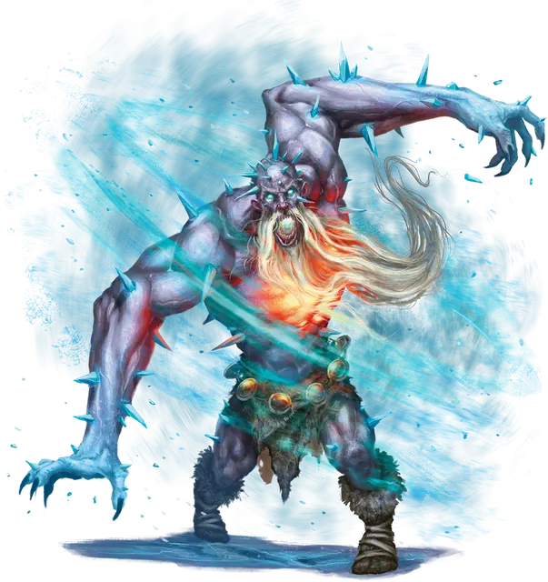

Ярость Костччи
Fury of Kostchtchie
Огромное Исчадие (Демон), обычно хаотично-злое

Класс Доспеха 16 (природный доспех)
Хиты 216 (16к12 + 112)
Скорость 40 футов
| мод | спас | ||
|---|---|---|---|
| СИЛ | 26 | +8 | +8 |
| ЛОВ | 10 | +0 | +0 |
| ТЕЛ | 25 | +7 | +12 |
| мод | спас | ||
|---|---|---|---|
| ИНТ | 10 | +0 | +0 |
| МДР | 12 | +1 | +6 |
| ХАР | 11 | +0 | +0 |
Навыки Атлетика +13, Восприятие +6
Сопротивление урону огонь, электричество, яд
Иммунитет к урону холод
Иммунитет к состояниям испуг, отравление, очарование
Чувства тёмное зрение 120 футов, пассивное Восприятие 16
Языки Бездны, Великаний
Опасность 14 (11500 опыта)
Бонус мастерства +5
Особенности
Леденящая аура. Существо начинающее свой ход в пределах 10 футов от ярости, должно совершить спасбросок Телосложения Сл 20, иначе получит 11 (2к10) урона холодом.
Сопротивление магии. Ярость совершает с преимуществом спасброски от заклинаний и прочих магических эффектов.
Действия
Мультиатака. Ярость совершает две атаки Кулаком или Камнем.
Кулак. . Рукопашная атака оружием: +13 к попаданию, досягаемость 10 футов, одна цель. Попадание: 17 (2к8 + 8) дробящего урона плюс 10 (3к6) урона холодом или 17 (5к6) урона холодом, если цель получала урон от Леденящей ауры с конца предыдущего хода ярости.
Камень. . Дальнобойная атака оружием: +13 к попаданию, дистанция 60/240 футов, одна цель. Попадание: 30 (4к10 + 8) дробящего урона.
Бонусные действия
Разбег. Ярость перемещается на свою скорость навстречу врагу, которого он может видеть.
Описание
Ледяные великаны, пытающиеся изо всех сил возвыситься в своем ордене, наряду с теми, кто отвергает Аннама и его детей, иногда обращаются к поклонению повелителю демонов Костччи [Kostchtchie]. В мифах об этих великанах Костччи когда-то был ледяным великаном такой огромной мощи, что он убил повелителя демонов в единоборстве, присвоил себе его слой Бездны и теперь ждёт, когда другие ледяные великаны присоединятся к нему в завоевании остальной части Бездны.
Когда Костччи отвечает на мольбы великанов, он наделяет их сверхъестественной силой и свирепой жаждой крови. Мускулы великанов набухают, их руки удлиняются до колен, и их окружает пронизывающий холод. Однако за дары повелителя демонов приходится платить, поскольку души великанов медленно сгорают, подпитывая эти новообретенные силы. Со временем ощущение жжения в груди усиливается, приводя этих великанов в неистовство. Недавно преобразившиеся демоны быстро обнаруживают, что только бой может заглушить это жжение.